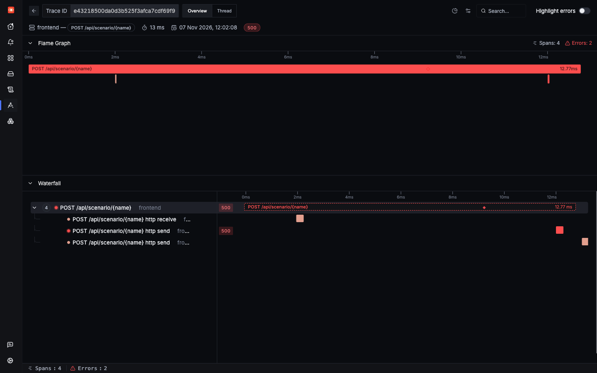

Lab 2: incident 4 of 4
A customer quotes a trace ID
A customer sends you an error message with an ID in it. Lab 2 takes you from that ID to the exact request in seconds. In Lab 1 the trace exists just the same, but nobody can tell you which one it is.
1Trigger it
Play the customer. Fire crash in Lab 2 and copy the trace_id from the response. Then fire it in Lab 1, and look for the same field.
2Symptom
Both labs fail in the same way, but look at what the customer gets back:
{"status": 500, "error": "ZeroDivisionError('division by zero')", "trace_id": "e43218500da0d3b525f3afca7cdf69f9"}{"status": 500, "error": "ZeroDivisionError('division by zero')"}A customer of Lab 2 can quote that ID in a support ticket. A customer of Lab 1 can only say roughly when it happened.
3Where to look
With an ID, you don't need to search around. Open it directly: http://signoz.localhost:8080/trace/<trace ID>. Or search for it, which also finds the logs.
4Search
Lab 2: the exact trace
Lab 1: every crash, with nothing to tell them apart
In the saved window that search matched 61 spans, from crashes that all look the same. You could narrow it by time, but with the same error at the same moment you would be guessing which one was this customer's.
5Evidence

Everything you need is in one place: the exception, the stack trace with its file and line, and the log. There was no searching, and no guessing at time ranges.
6Root cause
This incident is about the ID, not the crash. The crash itself is covered in An unhandled error.
Lab 1's trace has an ID too. The agent creates one for every request. But the app has no code that reads it, so it can't put it in a response. Lab 2 adds that code:
labs/lab2-custom-dimensions/app/frontend.py lines 234–236234def current_trace_id() -> str | None:
235 ctx = trace.get_current_span().get_span_context()
236 return format(ctx.trace_id, "032x") if ctx.is_valid else NoneThe exception handler then includes it in the error response:
labs/lab2-custom-dimensions/app/frontend.py lines 239–243239@app.exception_handler(Exception)
240async def unhandled(request: Request, exc: Exception) -> JSONResponse:
241 # Common app pattern: log unhandled errors and return JSON.
242 log.exception("unhandled error on %s %s", request.method, request.url.path)
243 return JSONResponse({"status": 500, "error": repr(exc), "trace_id": current_trace_id()}, status_code=500)7Resolution
There's no bug to fix here. It is a habit worth copying: return the trace ID on errors, and show it to the user, so that a support ticket points straight at the evidence.
Lab 1 can get the same thing with the change you just read. It needs the opentelemetry-api package and these few lines. Nothing else about its setup has to change.
Try it in Lab 1
- Change it. Add
opentelemetry-api==1.45.2tolabs/lab1-hands-off/app/requirements.txt. Then, inlabs/lab1-hands-off/app/frontend.py, addfrom opentelemetry import traceat the top, add thecurrent_trace_idfunction aboveunhandled, and add"trace_id": current_trace_id()to its response. Save both files. - Deploy it, from the repo's root. Saving the file isn't enough, because the pods run the image from the last build. What this command does.
make lab1 - Fire a crash in Lab 1. The response should now include
trace_id. Query API only - Open that trace at
http://signoz.localhost:8080/trace/<trace ID>. - Undo the change when you're done, because Lab 1 is meant to have no OpenTelemetry code.
git restore labs/lab1-hands-off/app/requirements.txt labs/lab1-hands-off/app/frontend.py make lab1
Check yourself: Why does Lab 1 return no trace ID, when the agent creates one for every request?
Check yourself: A customer gives you a trace ID from Lab 2. What is the fastest way to the evidence?